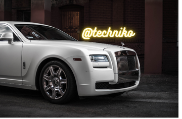

Rolls-Royce History

Ask your average person in Los Angeles for the world’s most refined and respected automaker and they’re going to say Rolls-Royce nine times out of ten. A look back at Rolls-Royce history shows how they developed such a legendary standing among everyone from everyday people to genuine enthusiasts. Read on to find out more about who makes Rolls-Royce and how they rose to prominence in today’s market.
Who Makes Rolls-Royce?
You’ll find the roots of Rolls-Royce way back in January 1904. Two independent car manufacturers named Henry Royce and Charles Rolls made an alliance after admiring each other’s work in the emerging industry. They worked together to produce four models ranging from a £395 ($494) two cylinder 10HP to a £890 ($1114) six cylinder.Those models were unveiled at the Paris Salon in December the same year. They proved an immense success, and the Rolls-Royce Limited brand was formed just over a year later in 1906.
How Did Rolls-Royce Succeed?
Two years after forming their company, Henry Royce and Charles Rolls set up a factory near Derby and started producing an all-new six cylinder that became known as the now legendary Silver Ghost.All their focus was taken from previous models to the Ghost. It built the company’s reputation, and by 1921 they were compelled to expand across the pond by opening a factory in Springfield, Massachusetts.
Continuing Rolls-Royce Success
Rolls-Royce survived the Great Depression and the Second World War, continuing to produce the Ghost alongside the new Wraith in a two-model strategy. Production moved to Crewe in 1946, and eventually, a range of Silver series cars included:
Silver Dawn
Silver Cloud
Silver Shadow
Silver Spirit
Silver Seraph
They’re now recognized as the world leader in luxury and prestige cars, with current models including:
Phantom
Phantom EWB
Cullinan
Ghost
Wraith
Dawn
New Black Badge configurations are creating a new pinnacle of luxury in the Rolls-Royce lineup. Interested in learning more? Find out how many Rolls-Royce cars are made each year. We’d also be happy to teach you about the current lineup of Rolls-Royce engines and Rolls-Royce colors.